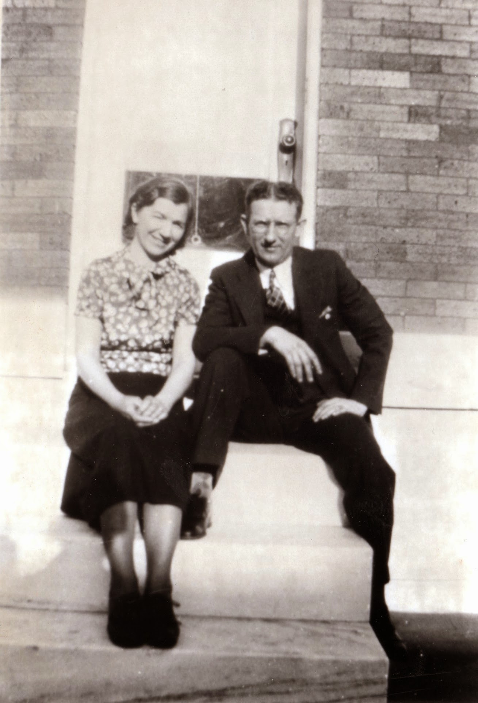
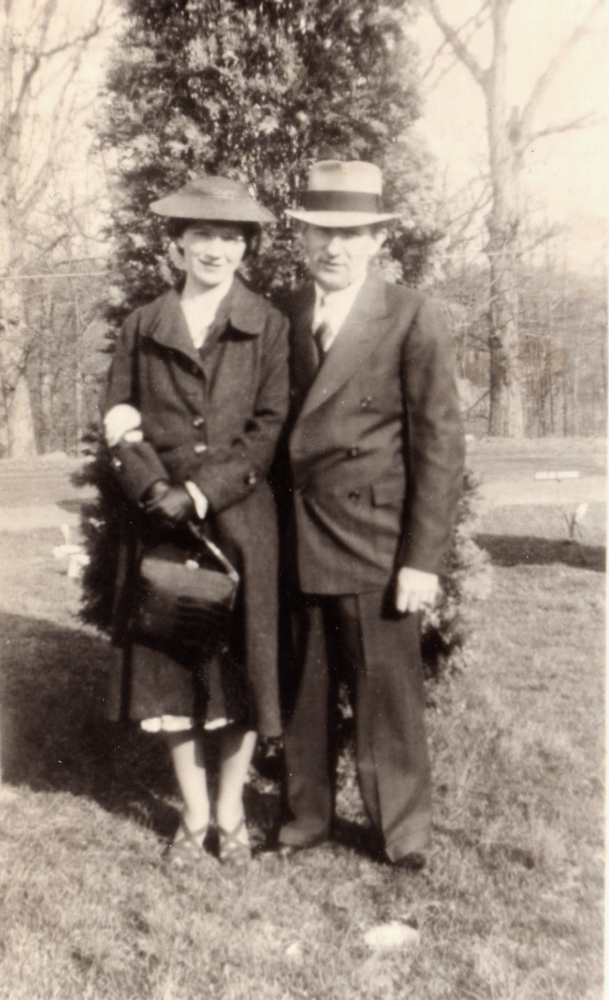
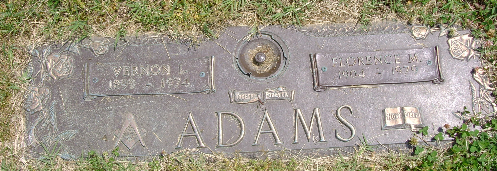

Vernon L. Adams Sr.
1899–1974
Life Events
Born: 1899
Family
Spouse:
Military Service
No military service information has been added.
Biography
Vernon L. Adams Sr. was born in 1899. He was the son of John H. Adams (1860–1931) and Chessie Fitchett Adams (1860–1939).
Vernon married Florence Melson Webster, daughter of William Gabriel Snead Webster and Addie Leola Daniel. Their children included Vernon L. Adams Jr. and Kenneth W. Adams.
The 1930 United States Federal Census records Vernon and Florence living in Baltimore, Maryland, with their son Vernon and Florence's younger brother Eugene Lee Webster. Vernon's parents, John H. and Chessie Adams, were recorded in a nearby household.
The 1940 census records Vernon, Florence, their sons Vernon Jr. and Kenneth, and Eugene Webster in the family household. The 1950 census records Vernon, Florence, Kenneth, and Eugene together in Baltimore.
Vernon died in 1974. He was buried at Moreland Memorial Park in Parkville, Maryland, where he shares a grave marker with Florence.
Photos


Grave & Burial

Moreland Memorial Park, Parkville, Baltimore County, Maryland, United States
Sources
No sources have been added yet.